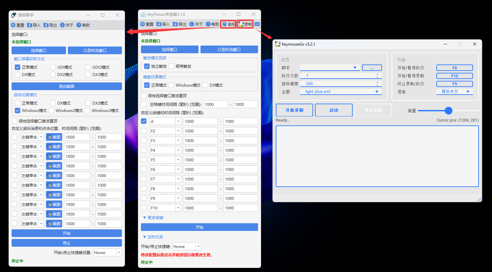

KeyPresser
专业的自动化按键工具，支持后台运行，解放你的双手
专业的自动化按键工具，支持后台运行，解放你的双手
简洁直观的操作界面，让自动化操作变得简单
无需保持被控窗口在前台，支持后台自动按键操作，让你可以同时进行其他工作。
支持独立触发和顺序触发两种模式，可以根据需要灵活配置按键序列。
提供正常模式、Windows模式和DX模式三种键盘仿真方式，适应不同场景需求。
内置鼠标自动化功能，支持图像识别定位点击，让操作更加精准。
支持设置按键时间间隔范围，生成随机间隔，使操作更加自然。
支持保存和加载操作配置，方便在不同场景快速切换。
视频中分别演示了使用keypresser和鼠标助手，实现在火影决斗场自动放技能！
视频来源：Bilibili - KeyPresser使用演示
点击"选择窗口"按钮后，根据提示点击目标窗口（例如游戏窗口）。可以点击"凸显所选窗口"来确认选择是否正确。
根据需要选择"独立触发"或"顺序触发"模式。独立触发模式下，勾选的按键独立计算时间间隔；顺序触发模式下，按键按顺序依次触发。
选择合适的键盘仿真模式：正常模式、Windows模式或DX模式。如果Windows后台模式不生效，可以尝试DX模式。
勾选需要自动点击的按键，选择具体的按键类型，并设置时间间隔。当最小值和最大值不同时，将在范围内生成随机间隔。
点击"开始"按钮或按下快捷键，即可开始自动按键。点击"停止"按钮或再次按下快捷键可停止操作。